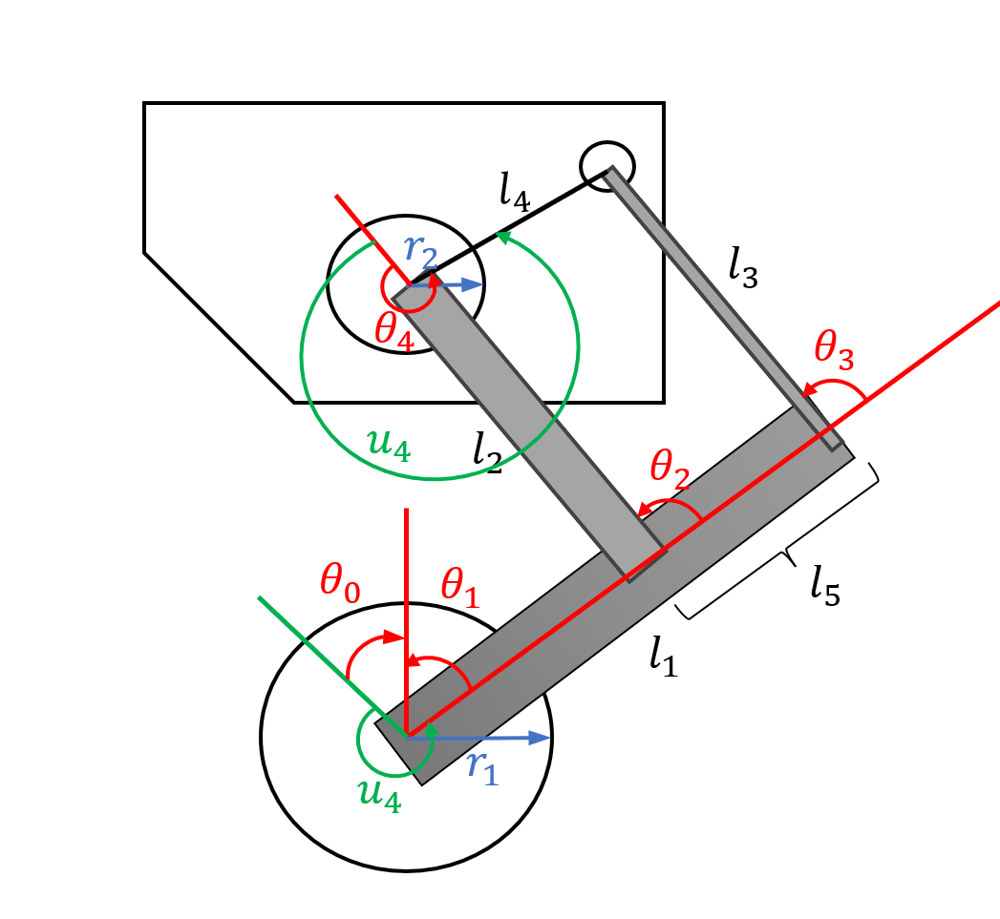
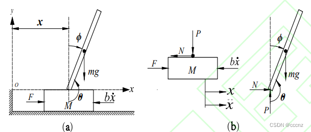

串联连杆轮足机器人
声明：本文档基于世博同学的硬件开源、机械开源，搭建可参考https://github.com/MuShibo/Micro-Wheeled_leg-Robot，感谢无私开源。
1. 前言
在进行建模之前，我们需要明确此次需要搭建的被控对象模型的物理结构如何，如下图所示，为开源搭建的机械结构。

由图所示，该结构为连杆腿结构，由两个驱动电机组成，分别为负责屈伸的关节空心杯舵机与负责运动的轮子无刷电机。由此，建立被控对象一侧的模型如下图所示：
 在进行控制对象建模前，我想我们需要明确整个模型的输入输出应当是如何的。该机器人分为两个部分，详情可以拆分成2023赛季火锅战队使用的平衡步兵，该步兵的机械组成为两个轮子电机，因此被戏称为板凳。在当年实现的功能仅仅是能够控制机器人的移动，并保持平衡功能。这是轮足机器人需求的第一个功能，即平衡与移动。
但在本项目中，之所以会添加一个电机，是因为在执行控制时，为了实现平衡步兵的最佳性能，需要实现跳跃、row轴稳定的主动悬挂的功能。因此，在这里需要的就是轮足机器人的第二个功能，即跳跃与稳定。
因此，本项目将记录我学习的轮足机器人的控制方法，这部分会首先介绍该机器人的理论、建模与仿真部分。首先，我们还是先从板凳开始控制。
2. 倒立摆
2.1 倒立摆动力学模型搭建
若去除三连杆结构，为使机器人进行运动，会构成如下的控制模型：

学习要将循序渐进，我们就从这个模型开始分析。若不考虑装配误差的纯理想模型，这个模型一共具有五个自由度，由(\(x,y,z,pitch,yaw\))构成。简化来说，就是一个一阶的倒立摆模型，其构型如下图所示：

其中，左图为构成倒立摆的整体力学模型示意图，右图为倒立摆两部分各自的受力分析图。其中的参数含义如下表所示：
字符表示 |
参数含义 |
|---|---|
\(F\) |
机器人整体受力 |
\(x\) |
机器人整体位移 |
\(M\) |
小车质量 |
\(m\) |
连杆质量 |
\(b\) |
摩擦系数 |
\(I\) |
连杆绕质心的转动惯量 |
\(\eta\) |
连杆转动的阻力系数 |
\(\theta\) |
连杆与小车的夹角（参考为下） |
\(\phi\) |
连杆与小车的夹角（参考为上） |
分析时，我们需要对该机器人进行整体的平衡状态构建，并通过分析平衡时的状态，建立力学方程，首先进行水平方向的力学分析： 以小车为分析对象，其水平受力平衡情况下的构建的牛顿第二定律等式为： $\( M\ddot{x}+b\dot{x}+N = F \)\( 以连杆为分析对象，其水平受力平衡情况下的构建的牛顿第二定律等式为： \)\( N = m\frac{d^2}{dt^2}(x+lsin\theta) \)\( 以内力N为中间变量，对（1）（2）式进行合并，获得一个动力学模型。 \)\( (M+m)\ddot{x}+b\dot{x}+ml\ddot{\theta}cos\theta-ml\dot{\theta}^2sin\theta = F \)$ 然后进行竖直方向的力学分析：
以连杆为分析对象，其竖直受力平衡情况下的构建的牛顿第二定律等式为： $\( m\frac{d^2}{dt^2}(cos\theta) = P+mg \)$
连杆绕转轴具有的力矩平衡公式为： $\( I\ddot{\theta} = -Plsin\theta-Nlcos\theta-\eta\dot{\theta} \)\( 将式子（2）（4）（5）联立，获得： \)\( (ml^2+I)\ddot{\theta}+mglsin\theta+\eta\dot{\theta} = -ml\ddot{x}cos\theta \)\( 又因为在平衡时，\) \phi\(值极小，\)\theta\(值极大，因此在进行线性化时，我们需要考虑到以下的等价关系： \)\( cos\theta = cos(\phi+\pi)=-1\\ sin\theta = sin(\phi+\pi)=-\phi\\ {\dot{\phi}}^2 = {\dot{\theta}}^2 = 0 \)\( 因此我们就获得了线性的一阶倒立摆动力学方程： \)\( (M+m)\ddot{x}+b\dot{x}-ml\ddot{\phi} = F\\ (ml^2+I)\ddot{\phi}-mgl\phi+\eta\dot{\phi} = -ml\ddot{x} \)\( 随后，由于我们需要建立LQR控制器对其进行控制，我们需要建立型如下的状态空间方程： \)\( \dot{X} = AX+Bu\\ y = CX+Du \)\( 其中，输入为力，即F，X为系统中隐藏的状态变量，为了使所有变量都能找到对应，我们建立这样的状态变量： \)\( X = [x,\dot{x},\phi,\dot{\phi}] \)\( 那么，我们成功构建了这样的状态空间方程： \)\( A = \begin{bmatrix} 0 & 1 & 0 & 0\\ 0 & \frac{-4b}{4M+m} & \frac{3mg}{4M+m} & \frac{3\eta}{4M+m}\\ 0 & 0 & 0 & 1\\ 0 & \frac{-3b}{4Ml+ml} & \frac{3(M+m)g}{4Ml+ml} & \frac{-3(M+m)\eta}{4Ml^2+ml^2}\\ \end{bmatrix}\\\\ B = {\begin{bmatrix} 0 & \frac{4}{4M+m} & 0 & \frac{3}{4Ml+ml} \end{bmatrix}}^T\\\\ C = \begin{bmatrix} 1 & 0 & 0 & 0\\ 0 & 0 & 1 & 0\\ \end{bmatrix}\\\\ D = {\begin{bmatrix} 0& 0 \end{bmatrix}}^T \)$
2.2 倒立摆仿真
我们使用simscape作为仿真工具，首先，利用matlab，在命令行窗口中新建simscape空间：
smnew
获得了如下的界面：

随后，我们构建一个倒立摆的模型，如下图：